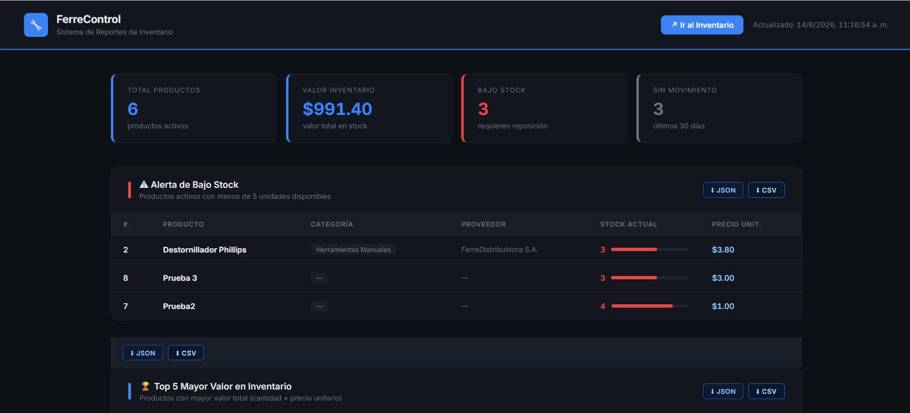

Finalizado
FerreControl
Problema abordado
Gestionar inventario desde una aplicación web conectada a una base de datos remota y a un servicio de reportes separado.
Solución desarrollada
Aplicación Express + EJS con MySQL en Docker, comunicación por Tailscale y acceso visual a un sistema de reportes independiente.
Mi aporte específico
Aplicación de inventario, rutas Express, vistas EJS, conexión MySQL, Dockerfile y comunicación privada mediante Tailscale.
Resultado obtenido
Sistema distribuido funcional para registrar productos, actualizar stock, consultar historial y acceder a reportes externos.
- Express
- MySQL
- Docker
- Tailscale